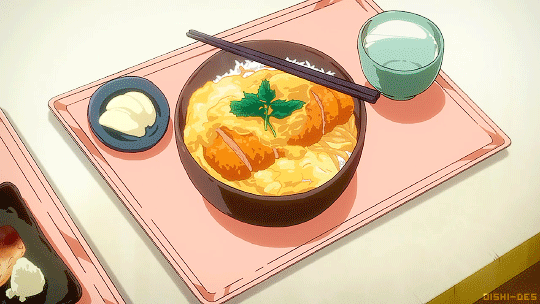

Katsudon

Katsudon (don, meaning "bowl" in Japanese) is a Japanese classic. As a kid, it was
always my go-to order at the local Japanese restaurant
in my hometown. The sweetness of the egg and onions truly make
the dish special.
Katsudon is a panko-fried pork or chicken cutlet (katsu) over rice with
sweet egg and onions.
What you need: (makes 2 servings)
- 2 pork chops or chicken breast
- 1 large egg (for breading)
- panko breadcrumbs
- oil (for frying)
- salt and pepper
- flour(for breading)
- 1/2 cup dashi stock or chicken stock
- 2 tsp sugar
- 1 tbsp soy sauce
- 2 tsp Mirin
- 2 large eggs
- 1 onion
- steamed white rice
- scallion
How to prepare:
- tenderize the porkchop/chicken breast until it is about 1cm thick
- season the meat with salt and pepper